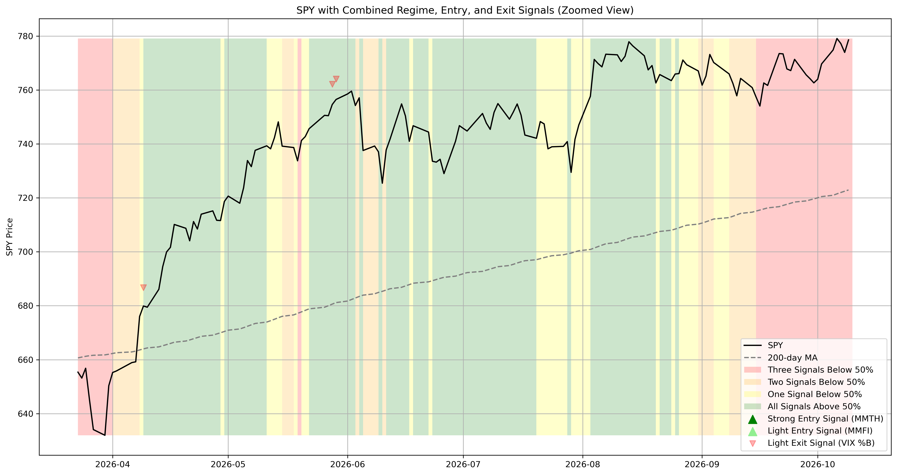
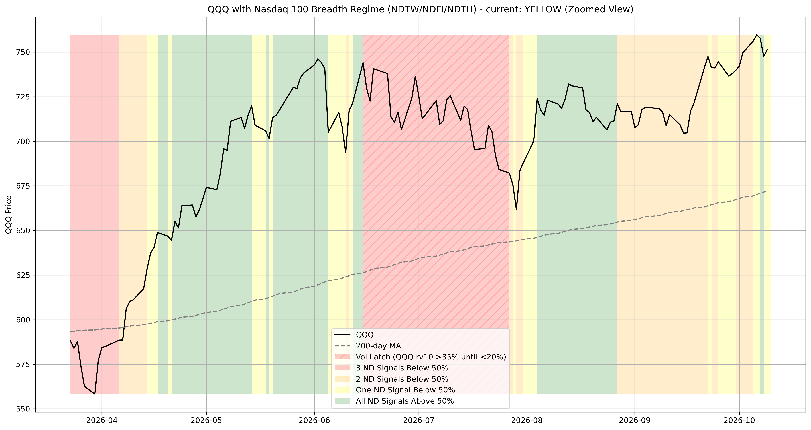
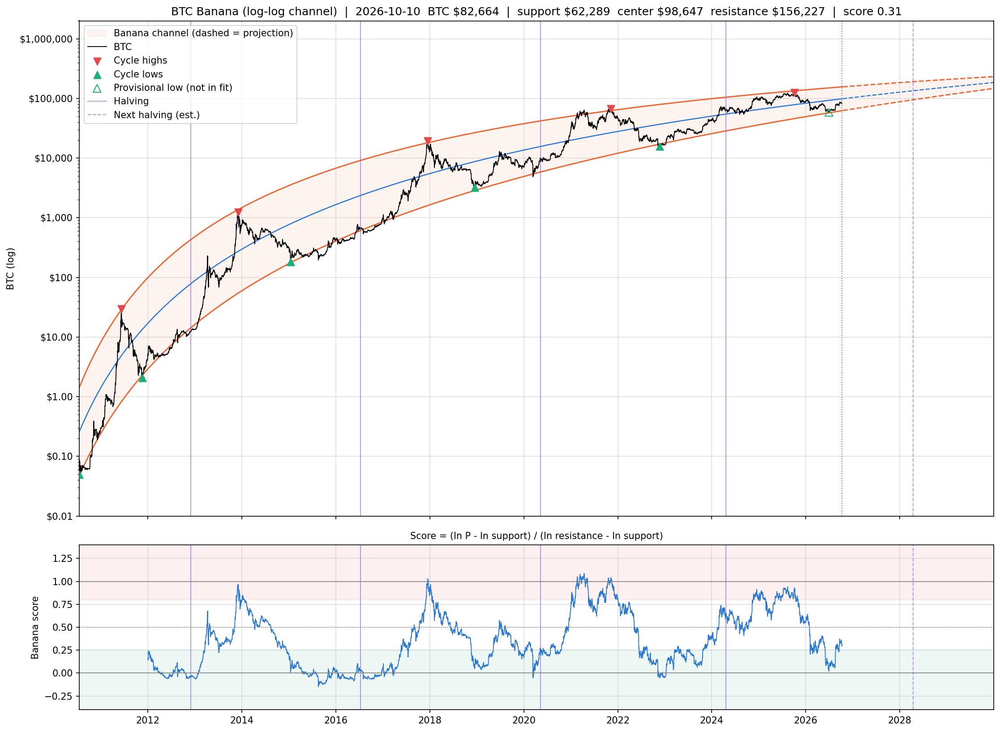
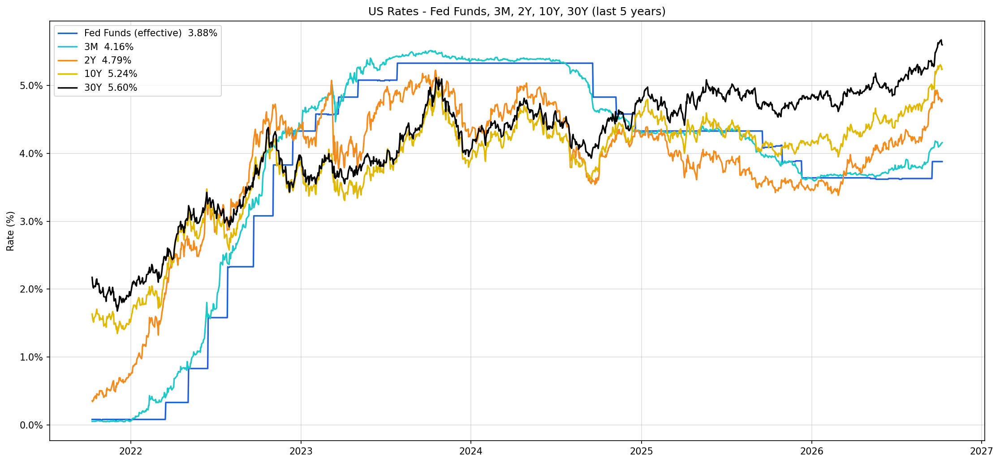

SPY Regime (NYSE breadth)

About this chart
Red Background (Risk-Off Regime): Generated by NYSE Advance/Decline Ratio (ADRN) z-score analysis. Uses 252-day lookback period with 50-day smoothing to calculate cumulative z-score. Risk-off regime triggers when z-score falls below -1.0 threshold, indicating broad market weakness and defensive positioning.
Color-Coded Momentum Backgrounds: Based on the count of momentum indicators (MMTW, MMFI, MMTH) below 50% threshold:
- Green: All 3 momentum signals above 50% (strong bullish momentum)
- Yellow: 1 signal below 50% (mixed momentum, caution warranted)
- Orange: 2 signals below 50% (weak momentum, defensive stance)
- Red: 3 signals below 50% (no momentum, high risk environment)
These breadth indicators provide a comprehensive view of market participation and momentum across multiple timeframes, helping to gauge overall market health and positioning for risk management decisions.
Strong Entry Signals (MMTH): Dark green triangles indicate strong entry signals based on 200-day market momentum. Triggers when MMTH crosses above 25% threshold with no confirmation period required. These represent the most reliable entry signals to get long again after a market sell-off.
Light Entry Signals (MMFI & MMTW): Light green triangles indicate light entry signals based on shorter-term momentum indicators. MMFI (50-day) and MMTW (20-day) both trigger when crossing above 25% threshold, but require 3-day confirmation periods to avoid false signals. These provide earlier but less reliable entry signals compared to MMTH.
Exit Signals (VIX Bollinger): Light red downward triangles indicate exit signals based on VIX volatility analysis. Uses 20-day Bollinger Bands (2 standard deviations) to calculate %B indicator. Exit signal triggers when VIX %B falls below 0, indicating VIX is below its lower Bollinger Band and potentially signaling complacency or overbought conditions.
QQQ Regime (Nasdaq 100 breadth)

About this chart
QQQ with its 200-day moving average. Same logic as the chart above: the NYSE AD z-score (< -1.0) is the red override, otherwise the background counts how many Nasdaq 100 breadth series (NDTW 20-day, NDFI 50-day, NDTH 200-day % above MA) are below 50% - 3 red, 2 orange, 1 yellow, 0 green. Nasdaq 100 breadth is the preferred regime for the QQQ universe (pynance-research RF-49 to RF-51). A second red override (hatched) is the QQQ volatility latch: red once QQQ 10-day realized vol rises above 35%, and held until it falls below 20% (pynance-research RF-77/78, part of the Roth QLD gate). Descriptive only - no system reads it.
BTC Banana (log-log channel)

About this chart
Algorithmic version of Peter Brandt's log-scale parabolic BTC channel. Support is a quadratic in (log time, log price) fitted to each cycle low; resistance is the same fitted to each cycle high. Cycle highs are all-time highs followed by a 50%+ drawdown; the low after the latest high is provisional until price triples from it. Score = position inside the channel in log space (0 = support, 1 = resistance); green zone < 0.25, red zone > 0.8. Refitted daily on all history, so the bands shift as pivots confirm. Descriptive only - no system trades on it. See pynance-research FINDINGS RF-46.
US Rates (last 5 years)

About this chart
Effective Fed Funds rate (FRED:DFF, daily) against the 3-month, 2-year, 10-year and 30-year Treasury yields (TradingView TVC:US03MY / US02Y / US10Y / US30Y), all in percent over the trailing 5 years. The sidebar shows the latest print and its 1-year change. Descriptive only - no system reads it.